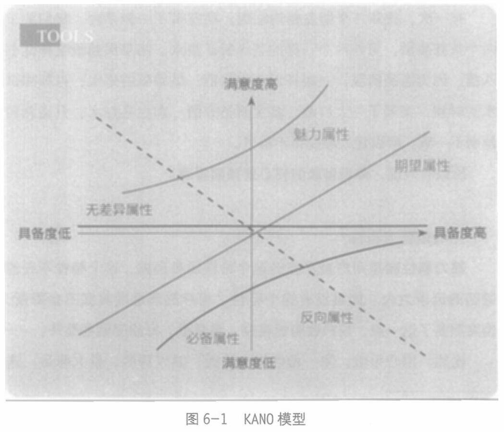

第六章 感知的分歧：特性与属性
的点叫一个“特性”(features)。每一个特性都是我们主动做出来、花成本让它存在的。而属性是从用户视角出发的，是用户对产品特性的反应。
也就是说，特性和属性的关系是，特性是自身视角，是产品自己拥有的特征点，而属性是用户视角，是用户对这个特性的具体感知，是对手盘视角。
KANO模型(见图6-1) 把产品的属性分为五种：魅力属性、期望属性、必备属性、无差异属性、反向属性。它们决定了用户对产品的满意度。

201